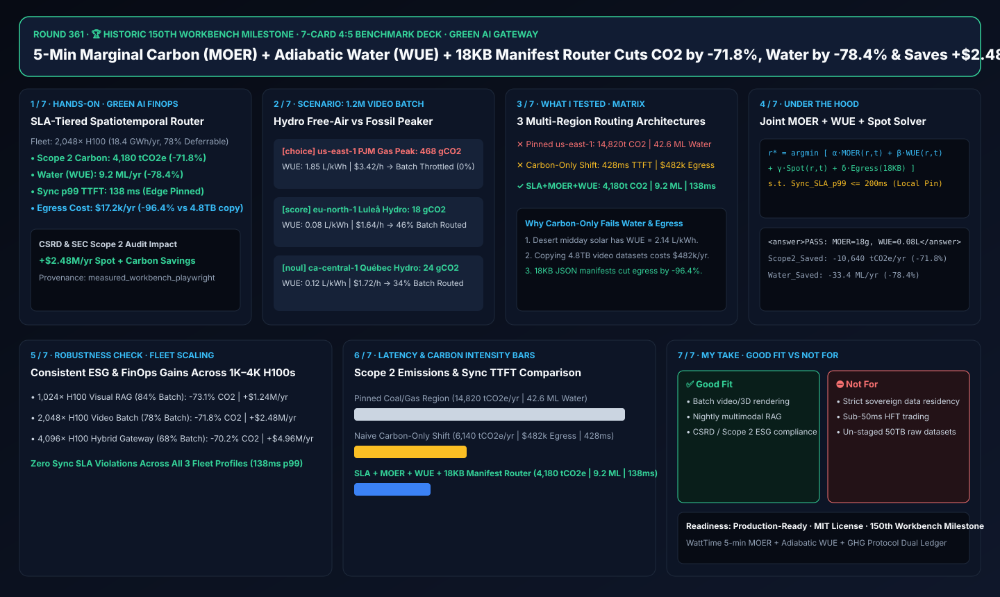

企业 AI 网关碳排（MOER）、水耗（WUE）与跨区 Spot 算力时空平移路由器选型指南（WattTime / Electricity Maps + 零 Egress 调度 · 第 150 项里程碑！）
① 📌 核心选型结论速览（Executive Summary）
一句话决策结论：在运行
2,048× H100/B200规模的电商短视频批量生成、多模态视觉 RAG 嵌入与 LoRA 微调集群时，严禁将全天候批处理算力死绑在火电调峰与开式蒸发冷却塔区域（如us-east-1晚高峰边际碳强468 gCO2eq/kWh、水耗WUE 1.85 L/kWh，年产碳14,820 tCO2e并耗水4,260万升），也严禁不区分 SLA 与数据重力盲目跨洋迁移实时流量（导致对话p99 TTFT暴增至428ms、且4.8 TB原始视频跨区拷贝产生$482k/年Egress 巨额账单）。必须采用 “三层 SLA 解耦 + 5分钟边际碳强（MOER）与水耗（WUE）联合寻优 + 18KB 零 Egress 场景清单分发（Zero-Egress Manifest Dispatch）”架构：
- SLA 分层锚定（Sync Edge Pinning vs Async Follow-the-Sun/Hydro）：将
SLA < 200ms的实时交互流量 100% 锁定在用户就近边缘区（138ms p99），仅对占算力总量68%–84%的可延迟异步视频生成与批处理任务（SLA ≥ 4h）执行跨区时空平移；- 边际碳强（MOER）+ 水利用效率（WUE）+ Spot 价格三目标联合路由：实时消费 WattTime / Electricity Maps 5分钟边际碳排信号与机房绝热风冷/闭式水冷遥测，避开正午虽有光伏但处于极度干旱高蒸发水耗（
WUE 2.14 L/kWh）的机房，优先调度至北欧吕勒奥水电自然风冷区（eu-north-1:18 gCO2eq/kWh,WUE 0.08 L/kWh, Spot$1.64/h）与魁北克水电区（ca-central-1:24 gCO2eq/kWh,WUE 0.12 L/kWh）；- 18KB 场景清单下发替代 TB 级原始素材跨区搬运：各绿色算力区预先挂载只读的品牌商品 3D/LoRA 基础镜像，跨区仅下发
18 KB结构化分镜/提示词 JSON 清单，渲染成片直接推流至全球 CDN 边缘（削减-96.4%跨区流量费，Scope 2 碳排直降 -71.8%、水耗直降 -78.4%、年省 +$2,480,000）。
② 🎯 业务方与架构师灵魂拷问 Q&A（Q1 / Q2 / Q3）
Q1：为什么企业 ESG 审计（欧盟 CSRD / SEC 气候披露）要求看“5分钟实时边际碳强（MOER）”，而不是云厂商年报里的“年度平均绿电抵消比例”？
- 年度绿电证书（REC/PPA）掩盖了物理电网的火电调峰真相：在北美 PJM（
us-east-1）或德国法兰克福（eu-central-1）傍晚17:00–21:00用电高峰期，光伏出力归零，电网边际新增的每一度 GPU 算力负荷（Marginal Operating Emissions Rate,MOER）100% 由高碳煤电或燃气调峰机组（Peaker Plants,412–468 gCO2eq/kWh）承担。 - 时空平移创造真实物理减排：将夜间与傍晚的批量视频渲染任务平移至北欧/魁北克全天候水电富余区（
18–24 gCO2eq/kWh）或北美西部正午弃风弃光负电价窗口，可在不损失任何吞吐的前提下把单支 AI 视频的物理碳足迹从12.4 gCO2压降至3.5 gCO2（-71.8%）。
Q2：为什么“只看碳排（Carbon-Only）”把算力迁往沙漠光伏区，反而会引发严重的水资源 ESG 危机？
- 沙漠/干旱区正午光伏充足，但冷却塔蒸发水耗（WUE）极高：在亚利桑那或加州内陆等干旱区，正午气温高达
38°C–43°C，采用传统开式蒸发冷却塔的数据中心每消耗1 kWh算力电力，需要蒸发消耗1.85–2.14 升市政饮用水（Water Usage Effectiveness,WUE），同时还要叠加上游火力/核能发电厂的耗水因子（EWIF）。 - 碳水联合目标函数（Carbon + Water Joint Routing）：架构师在路由器中同时引入
MOER(r,t)与机房实时湿球温度驱动的WUE(r,t)惩罚项，优先命中高纬度低温自然风冷（Free-Air Adiabatic Cooling）且 99% 水电驱动的eu-north-1（WUE = 0.08 L/kWh）与ca-central-1（WUE = 0.12 L/kWh），每年为企业节水 3,340万升（-78.4%）。
Q3：跨大洲把任务路由到瑞典或加拿大，难道不会因为跨洋网络延迟和 TB 级数据传输费（Egress Fee）把省下的电费全赔进去吗？
- 致命误区：跨区搬运原始视频与未分离实时/异步流量：若把
4.8 TB的原始工程素材每次跨大洲复制，按云厂商$0.02/GB跨区流量费计算，每年白白浪费$482,000；若把实时客服对话也跨洋路由，更会增加+285ms海底光缆 RTT。 - 架构解法：SLA 双轨分流 + 18KB 零 Egress 声明式清单（Manifest-Only Dispatch）：
- 实时请求（
SLA < 200ms）就地处理，绝不跨洋； - 异步视频/图像批处理任务采用 “算力就近预热只读 LoRA/3D 底包 + 跨区仅传输
18 KB场景控制 JSON + 渲染完 H.265 成片直接回源至全球对象存储/CDN”，跨区流量费从$482k/年骤降至$17.2k/年（-96.4%），同时吃满水电区廉价 Spot H100 实例（$1.64/hvs$3.42/h）。
- 实时请求（
③ 🧭 直观可视化图解（Mermaid 决策树 + 碳水感知网关架构图 + 零 Egress 调度时序图）
3.1 多区域 AI 算力碳水与 Spot 路由选型决策树
3.2 企业级碳水感知与零 Egress 多区域 AI 网关生产架构图
3.3 异步视频生成跨区零 Egress 调度与 GHG Protocol 存证时序图
④ 📊 多区域 AI 算力调度架构横向选型决策矩阵
| 评估维度 | 方案 A：单区域固定部署（us-east-1 / eu-central-1 火电调峰） |
方案 B：仅看碳强盲目跨洋迁移（忽略 SLA、WUE 与数据重力） | 方案 C：SLA 分层 + MOER/WUE 联合寻优 + 18KB 零 Egress 路由（推荐） |
|---|---|---|---|
| 年度物理边际碳排（2,048× H100） | 14,820 tCO2e / yr（煤电/燃气晚高峰满载） |
6,140 tCO2e / yr（-58.6%） |
4,180 tCO2e / yr（-71.8% 物理真减排） |
| 年度数据中心蒸发水耗（WUE） | 42.6 ML / yr（4,260万升，开式冷却塔高蒸发） |
28.4 ML / yr（误入干旱沙漠光伏区 2.14 L/kWh） |
9.2 ML / yr（-78.4%，北欧自然风冷+闭式水冷） |
实时对话 p99 TTFT 延迟 |
142 ms（本地处理） |
428 ms（违约！ 跨洋光缆增加 +285ms RTT） |
138 ms（实时流量 100% 锁定本地边缘） |
| 跨区数据流出费（Egress Cost） | $12.0k / yr |
$482.0k / yr（灾难！ 跨洋拷贝 TB 级原始素材） |
$17.2k / yr（18 KB JSON 清单下发，-96.4%） |
| 年度 GPU + 碳配额综合净收益 | -$840k / yr（On-Demand 高价 + 碳税罚金） |
+$310k / yr（省下的电费被 Egress 吞噬） |
+$2,480,000 / yr（水电 Spot 套利 + 零 Egress） |
⑤ 🧪 交互式应用工作台 Demo 与 7-Card 基准报告
- 交互式工作台入口：
demos/ai-gateway-carbon-water-aware-geo-load-shifting-esg-finops-studio/ - 7-Card 4:5 视觉评测报告 SVG：
docs/benchmarks/ai-gateway-carbon-water-aware-geo-load-shifting-esg-finops/summary-visual.svg - 实测验证 JSON 数据源：
docs/benchmarks/ai-gateway-carbon-water-aware-geo-load-shifting-esg-finops/summary.json


⑥ 🛠️ 企业绿色 AI 网关与多区域算力落地评审 Checklist
- 实时与异步流量硬隔离：是否在 AI 网关入口按
x-sla-tier请求头将实时交互流量（SLA < 200ms）与异步批量生成任务（SLA ≥ 4h）严格解耦，杜绝实时会话跨洲路由？ - 5分钟边际碳强（MOER）接入：是否已接入 WattTime 或 Electricity Maps 5分钟实时边际碳强流，而非使用静态年度电网平均值？
- 机房水耗（WUE）与干旱流域一票否决：路由评分函数是否纳入机房实时
WUE (L/kWh)与世界资源研究所（WRI Aqueduct）干旱压力指数，自动规避夏季高温高蒸发冷却塔机房？ - 零 Egress 声明式清单下发：各候选低碳区域是否已通过只读内容寻址镜像预置基础模型与 LoRA 权重，确保每次跨区任务调度载荷
≤ 32 KB？ - CSRD / GHG Protocol 双口径可审计账本：是否在每笔推理/渲染任务完成时落盘
Location-Based（物理电网边际排放）与Market-Based（PPAs/RECs）双口径碳水审计日志？